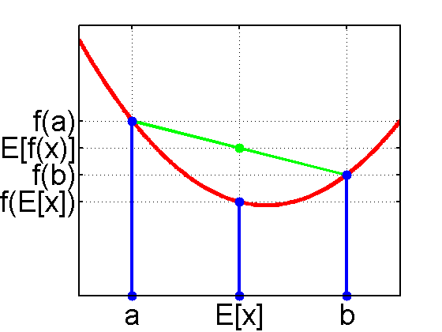
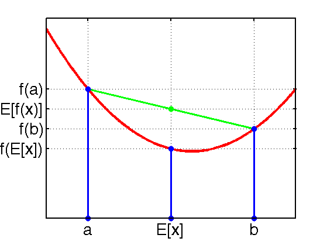

Illustration of Jensen's inequality
figure;
hold all;
domain = -2:0.01:5.5;
f = @(x)(x-1).^2;
plot([-1,4],[f(-1),f(4)],'-b','LineWidth',3);
plot(domain,f(domain),'-r','LineWidth',4);
plot([-1,-1],[-10,f(-1)],'--g','LineWidth',2);
plot([4,4],[-10,f(4)],'--g','LineWidth',2);
plot([1.5,1.5],[-10,6.4],'-g','LineWidth',2);
set(gca,'XTick',[],'YTick',[],'XLim',[-2.5,6],'YLim',[-10,25],'box','on','LineWidth',2);
annotation(gcf,'textbox',[0.77 0.7165 0.08791 0.07622],...
'String',{'f(x)'},...
'FontSize',20,...
'FitBoxToText','off',...
'LineStyle','none');
annotation(gcf,'textarrow',[0.3 0.4007],[0.6 0.4909],...
'TextEdgeColor','none',...
'TextLineWidth',2,...
'FontSize',16,...
'String',{'chord'},...
'LineWidth',2);
annotation(gcf,'textbox',[0.252 0 0.065 0.119],...
'String',{'a'},...
'FontSize',16,...
'LineStyle','none');
annotation(gcf,'textbox',[0.4761 0 0.065 0.119],...
'String',{'x\lambda'},...
'FontSize',16,...
'LineStyle','none');
annotation(gcf,'textbox',[0.710 0 0.065 0.119],'String',{'b'},...
'FontSize',16,...
'LineStyle','none');
p = get(gcf,'Position');
p(3) = 2*p(3)/3;
set(gcf,'Position',p);
printPmtkFigure convexFn

f = @(x) 0.3*(x-3.5).^2 + 2;
domain = 0:0.01:6;
figure; hold on;
plot(domain,f(domain),'-r','LineWidth',4);
xdata = [[1;1] [3;3] [5;5] ];
ydata = [[0;f(1)] [0;f(3)] [0;f(5)] ];
line(xdata,ydata,'Color','b','LineWidth',3);
plot([1,5],f([1,5]),'-g','LineWidth',3);
plot(xdata(:),ydata(:),'.b','MarkerSize',30);
plot(3,(f(1)+f(5))/2,'.g','MarkerSize',30);
grid on; box on;
set(gca,'XTick',[1,3,5],'YTick',[f(3),f(5),((f(1)+f(5))/2),f(1)]);
set(gca,'XTickLabel',{'a','E[x]','b'});
set(gca,'YTickLabel',{'f(E[x])','f(b)','E[f(x)]','f(a)'});
set(gca,'FontSize',28,'LineWidth',2);
printPmtkFigure('jensens');
